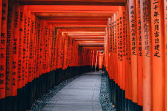
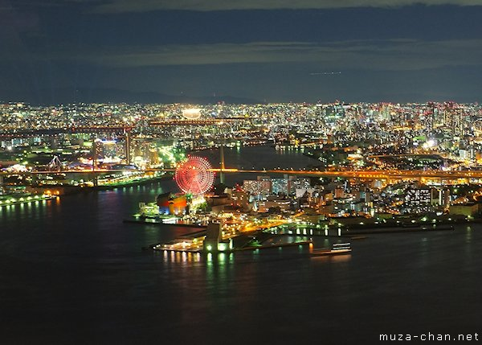
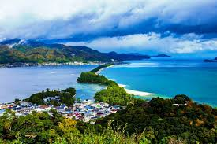
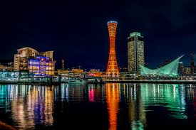
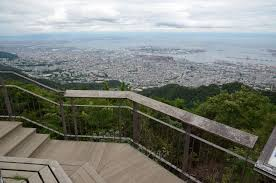

 The Fushimi Inari Taisha temple is the main temple to the primary Kami of rice and agriculture. Many japanese also worship this Kami as the patron of business. Foxes are seen as messengers of the gods and are depicted with parcels of grains within their mouth and are a staple of the Inari temples. This particular temple is located at the base of Inari Mountain, and its gates form a sea of orange had placed in a beautifully serene spread of nature.
 The Cosmo Tower, or the Osaka Government Sakishima Building,is the third largest building in Japan. On the fifty-fifth floor there is an observation deck which gives you a stunning 360 degree view of the city. At night when the sky is clear and the cities lights gently reflect off of the water nearby is the perfect time to view.
 Amanohashidate is a pine-covered sandbar that spans the mouth of Miazyu Bay in Northern Kyoto. The Amanohashidate is a popular tourist area that has boathouses, temples and beaches for people to visit.
 The Kobe Port was formerly the busiest container port in the world during the 1970s, however, after the 1995 Hanshin earthquake the port fell out of the spotlight. The port still operates to this day, but is no longer the lead shipping port of Japan. The Kobe Port does, however, have a nice view during the twilight and nighttime.
 Mount Maya is a popular visit for tourists visiting the Rokko Mountains. Mount Maya is very accessible making it a convienient location for those looking to get a taste of nature and a good night time view of Kobe ("Ten million dollar night view").